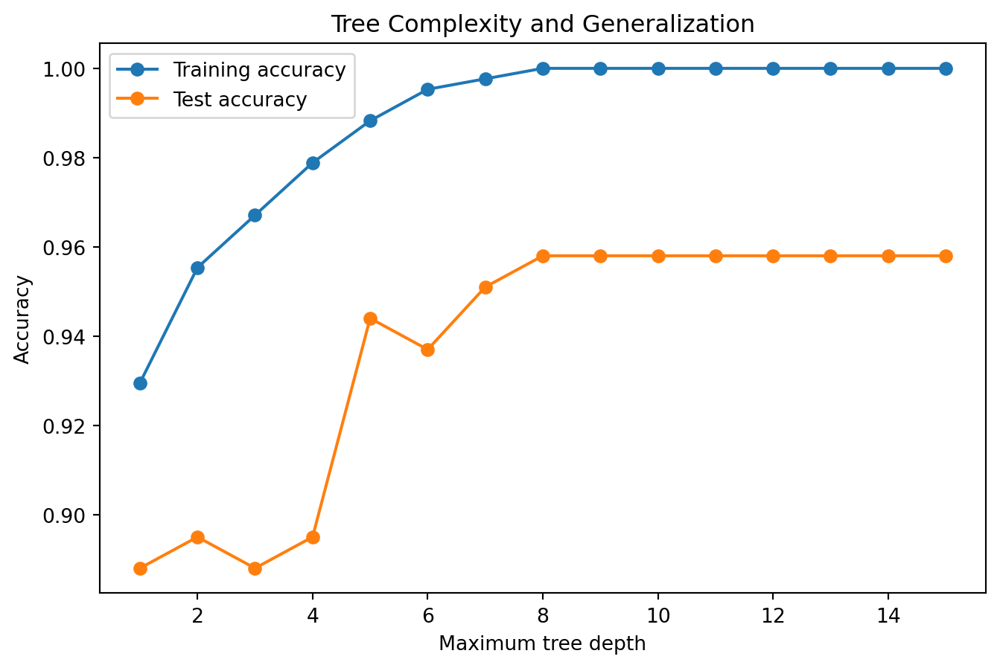
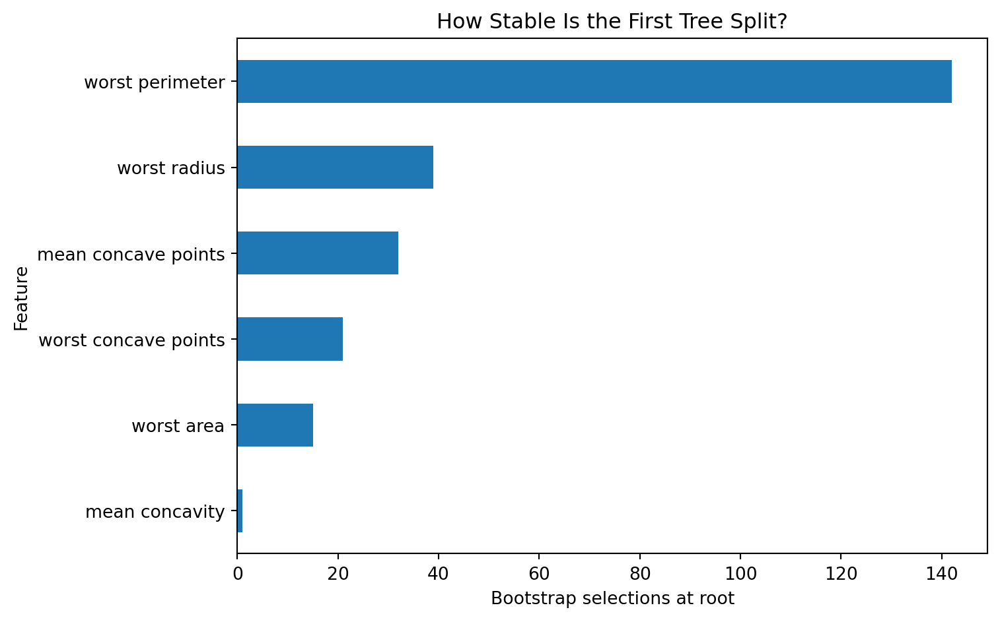
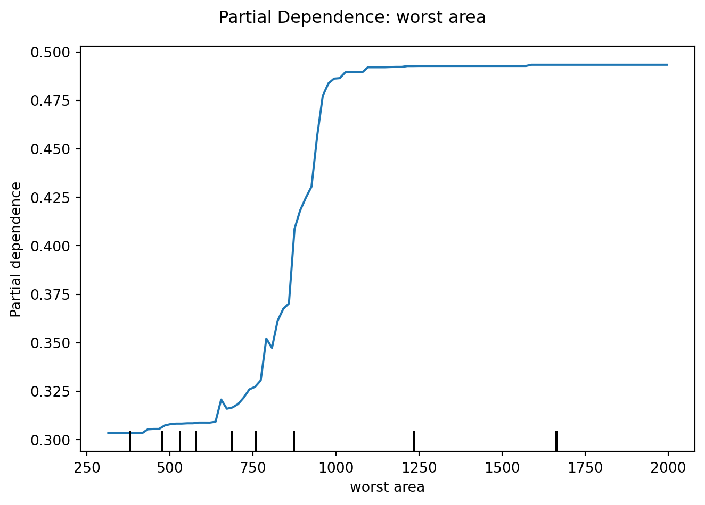

8Decision Trees and Random Forests: Learning by Partitioning
8.1 Learning Objectives
By the end of this chapter, you should be able to:
explain recursive partitioning as a supervised-learning strategy;
distinguish root nodes, internal nodes, branches, and leaves;
calculate and interpret Gini impurity and entropy;
explain information gain and regression split criteria;
fit classification and regression trees with scikit-learn;
explain why unrestricted trees overfit;
control tree complexity through depth, leaf-size, and pruning parameters;
explain cost-complexity pruning;
describe bootstrap aggregation (bagging);
explain how Random Forests decorrelate trees through feature subsampling;
interpret out-of-bag evaluation conceptually;
distinguish impurity-based from permutation feature importance;
explain why feature importance does not imply causal importance;
use partial dependence cautiously as a model-behavior tool;
compare single trees and forests using out-of-sample evidence;
connect tree models to health, education, and benchmark research problems.
interpret pixel-level feature importance cautiously in a computer-vision example.
8.2 Why This Matters
Linear and logistic regression represent outcomes through weighted combinations of features. Decision trees take a different approach: they repeatedly divide the feature space into regions.
A tree asks a sequence of questions:
Is \(x_j \le s\)?
Each answer routes an observation toward another question or a terminal prediction.
This makes trees intuitive, nonlinear, and capable of discovering interactions without requiring us to specify every interaction in advance.
But that flexibility comes with a cost: a deep tree can memorize noise.
ImportantCentral Question
How can recursive partitioning discover nonlinear structure while avoiding the temptation to memorize the training data?
8.3 From Linear Boundaries to Partitions
A logistic-regression classifier may separate classes using a linear boundary in the represented feature space.
A decision tree instead partitions the space into rectangles or regions.
For a split on feature \(x_j\) at threshold \(s\),
\[
R_1(j,s)=\{x:x_j\le s\},
\]
\[
R_2(j,s)=\{x:x_j>s\}.
\]
The algorithm searches for a feature and threshold that improve the purity or predictive quality of the resulting regions.
8.4 Anatomy of a Tree
The modern classification-and-regression-tree framework is classically associated with CART (Breiman et al. 1984).
A decision tree contains:
root node — the first split;
internal nodes — subsequent decision rules;
branches — outcomes of those rules;
leaves — terminal predictions.
A path from root to leaf can be read as a conditional rule.
\[
\Delta I
=
I_{\text{parent}}-I_{\text{split}}.
\]
The algorithm seeks splits that produce useful reductions.
NoteGreedy Does Not Mean Globally Optimal
Standard tree construction is greedy: at each node, it chooses a locally favorable split. It does not generally search every possible complete tree and prove that the final tree is globally optimal.
8.7 Calculate Impurity
import numpy as npdef gini(proportions): p=np.asarray(proportions)return1-np.sum(p**2)def entropy(proportions): p=np.asarray(proportions) p=p[p>0]return-np.sum(p*np.log2(p))gini([0.5,0.5]), entropy([0.5,0.5])
Unlike logistic regression, ordinary decision trees generally do not require standardization because splits depend on ordering and thresholds rather than Euclidean scale.
from sklearn.metrics import accuracy_scoredepths=range(1,16)train_scores=[]test_scores=[]for depth in depths: m=DecisionTreeClassifier(max_depth=depth,random_state=42) m.fit(X_train,y_train) train_scores.append(accuracy_score(y_train,m.predict(X_train))) test_scores.append(accuracy_score(y_test,m.predict(X_test)))plt.figure(figsize=(8,5))plt.plot(depths,train_scores,marker="o",label="Training accuracy")plt.plot(depths,test_scores,marker="o",label="Test accuracy")plt.xlabel("Maximum tree depth")plt.ylabel("Accuracy")plt.title("Tree Complexity and Generalization")plt.legend()plt.show()

Figure 8.2: Increasing tree depth can reduce training error while eventually harming generalization.
This is a concrete bias–variance lesson: flexibility can reduce bias while increasing variance.
8.12 Controlling Tree Complexity
Important parameters include:
max_depth;
min_samples_split;
min_samples_leaf;
max_leaf_nodes;
ccp_alpha.
These are not merely tuning knobs. They define how much structure the tree is allowed to learn.
8.13 Cost-Complexity Pruning
A large tree can be pruned by balancing fit against complexity.
A conceptual objective is
\[
R_\alpha(T)
=
R(T)+\alpha|T|,
\]
where \(R(T)\) measures tree error, \(|T|\) represents the number of terminal leaves, and \(\alpha\) penalizes complexity.
Hyperparameter selection should occur within resampling rather than by repeatedly checking the final test set. Chapter 16 will formalize that workflow.
8.14 Instability: A Tree’s Hidden Weakness
A small change in training observations can sometimes produce a substantially different tree.
This happens because early split choices affect every split below them.
Single trees can therefore have relatively high variance.
This weakness motivates ensemble methods.
8.15 Bagging: Many Unstable Models Can Become Stable Together
Bagging reduces variance by aggregating predictors fitted to bootstrap samples, an approach introduced by Breiman (Breiman 1996).
Bootstrap aggregation, or bagging, repeatedly samples training observations with replacement, fits a model to each bootstrap sample, and aggregates predictions.
Small sample changes can alter the root feature, threshold, and every downstream branch.
8.16.1 Bootstrap the Root Split
import numpy as npimport pandas as pdimport matplotlib.pyplot as pltfrom sklearn.tree import DecisionTreeClassifierrng_ts = np.random.default_rng(42)root_features_ts = []for _ inrange(250): idx_ts = rng_ts.choice(len(X_train), size=len(X_train), replace=True) X_boot_ts = X_train.iloc[idx_ts] ifhasattr(X_train, "iloc") else X_train[idx_ts] y_boot_ts = y_train.iloc[idx_ts] ifhasattr(y_train, "iloc") else np.asarray(y_train)[idx_ts] tree_ts = DecisionTreeClassifier( max_depth=3, min_samples_leaf=8, random_state=42 ).fit(X_boot_ts, y_boot_ts) root_idx_ts = tree_ts.tree_.feature[0]ifhasattr(X_train, "columns"): root_name_ts = X_train.columns[root_idx_ts]else: root_name_ts =f"feature_{root_idx_ts}" root_features_ts.append(root_name_ts)root_counts_ts = pd.Series(root_features_ts).value_counts().head(10)plt.figure(figsize=(8, 5))root_counts_ts.sort_values().plot(kind="barh")plt.xlabel("Bootstrap selections at root")plt.ylabel("Feature")plt.title("How Stable Is the First Tree Split?")plt.tight_layout()plt.show()root_counts_ts

(a) Bootstrap resampling reveals whether a tree repeatedly selects the same feature at the root.
worst perimeter 142
worst radius 39
mean concave points 32
worst concave points 21
worst area 15
mean concavity 1
Name: count, dtype: int64
(b)
Figure 8.3
If several features frequently compete for the root, substantive interpretation should be cautious.
Random forests reduce variance by aggregating many trees, producing a tradeoff:
\[
\text{single-tree interpretability}
\leftrightarrow
\text{ensemble stability and predictive strength}.
\]
ImportantResearch Reality Check
A tree diagram is visually persuasive, but visual clarity is not evidence that the structure is unique, stable, causal, or reproducible.
An explanation should be evaluated, not merely displayed.
8.17 Random Forests
Random Forests extend bagging by adding feature randomness, reducing correlation among trees while retaining the variance-reduction benefits of aggregation (Breiman 2001).
At each candidate split, a tree considers only a random subset of predictors rather than all predictors.
Why?
If one predictor is overwhelmingly strong, ordinary bagged trees may repeatedly choose similar early splits. Their errors become correlated.
Random Forest implementations and tree parameters are documented in scikit-learn’s ensemble and tree modules (scikit-learn developers 2026b, 2026a).
8.19 Why a Forest Can Generalize Better
Suppose individual tree errors have variance \(\sigma^2\) and pairwise correlation \(\rho\). A useful intuition for the variance of an average of \(B\) similarly distributed estimators is
OOB evaluation is useful, but it does not eliminate the need to think carefully about temporal, grouped, external, or final held-out validation.
8.21 Feature Importance: Important in What Sense?
Random Forests commonly expose impurity-based feature importance.
import pandas as pdimportance=pd.Series( forest.feature_importances_, index=X.columns).sort_values(ascending=False)importance.head(10)
worst perimeter 0.138356
worst area 0.128520
worst concave points 0.101787
mean concave points 0.094897
worst radius 0.093003
mean radius 0.060332
mean perimeter 0.050482
mean area 0.049681
mean concavity 0.044149
area error 0.035416
dtype: float64
This answers something like:
Which features contributed strongly to impurity reduction across this fitted forest?
It does not automatically answer:
Which variable causes the outcome?
Which variable should we intervene on?
Which variable is scientifically most important?
Which variable will remain important in another population?
8.22 Permutation Importance
Permutation importance asks how much predictive performance deteriorates when a feature’s values are shuffled.
Figure 8.4: Impurity-based and permutation importance can tell different stories about model dependence.
Different importance methods answer different questions.
8.24 Partial Dependence: Model Behavior, Not Causal Effect
Partial dependence can summarize how model predictions change as a feature varies while averaging over the observed distribution of other features.
from sklearn.inspection import PartialDependenceDisplaytop_feature=perm_importance.index[0]PartialDependenceDisplay.from_estimator( forest, X_test, [top_feature])plt.suptitle(f"Partial Dependence: {top_feature}")plt.tight_layout()plt.show()

Interpret this as a description of the fitted model’s behavior—not automatically as the effect of changing the feature in the real world.
8.25 Computer Vision Learning Experience: Pixel Importance Is Model Dependence
For flattened images, each pixel becomes a feature. Tree-based models can therefore assign feature importance to pixel locations.
Using the same handwritten-digits workload introduced in Chapter 7, a Random Forest can produce a (64)-element importance vector. Reshaping that vector to (8) makes the model’s dependence visually inspectable.
A useful extension is to compare this heatmap with permutation importance or with importance patterns from another fitted model.
8.26 Single Tree Versus Forest
Property
Single Tree
Random Forest
nonlinear relationships
yes
yes
interactions
automatic
automatic
scaling usually required
no
no
easy global visualization
often, if shallow
no
variance
often high
reduced by averaging
predictive strength
useful baseline
often stronger
individual decision path
easy to inspect
distributed across trees
feature importance
available
available, but interpret cautiously
A forest often gains predictive stability by sacrificing the simplicity of a single visible tree.
8.27 Three Tracks
8.27.1 Health Track
Tree models can discover nonlinear risk structure and interactions among measurements. But an “important” biomarker is not automatically a treatment target. Validate across relevant populations and inspect calibration and subgroup behavior when probabilities drive decisions.
8.27.2 Education Track
Trees can identify combinations of prior academic or institutional characteristics associated with retention or completion. Avoid turning predictive rules into deterministic labels about students. Prediction timing and intervention consequences remain central.
8.27.3 Open ML Benchmark Track
Benchmark datasets are ideal for comparing tree depth, pruning, instability, bagging, and Random Forests under controlled changes in noise and feature relevance.
8.28 Beyond the Algorithm: What Does “Important” Mean?
NoteImportance Is Always Relative to a Question
Suppose a Random Forest reports that Feature A has the highest importance.
It is tempting to conclude:
“Feature A is the most important determinant of the outcome.”
But importance can mean many things:
frequently used for impurity reduction;
strongly relied upon for prediction;
useful because it proxies another variable;
useful only in interactions;
useful only in this sample;
useful because of how the variable was measured.
None of these definitions automatically means causal influence.
A feature can be highly predictive precisely because it records the consequences of a process rather than its causes.
The deeper question is:
Important for what—prediction, explanation, intervention, measurement, or policy?
Machine learning becomes more intellectually rigorous when the word “importance” is never allowed to stand alone.
8.29 AI Pair Programmer: Explain My Forest
Ask an AI assistant to interpret the top five Random Forest feature importances.
Audit whether it:
names the importance method;
distinguishes predictive from causal importance;
notices correlated features;
acknowledges sample and model dependence;
treats ranks as exact scientific truths;
recommends interventions from predictive importance alone.
Then rewrite the interpretation.
8.30 Hands-On Lab: From One Tree to a Forest
Using a classification dataset:
complete the Problem Framing Canvas and Feature Ledger;
establish a baseline;
fit a shallow decision tree;
visualize the tree;
compare training and held-out performance;
increase tree depth and observe overfitting;
examine a cost-complexity pruning path;
fit a Random Forest;
compare tree and forest discrimination;
obtain OOB performance;
compare impurity and permutation importance;
inspect partial dependence for one feature;
explain why none of these results establishes causality;
document reproducibility decisions.
8.31 Practitioner Track
A practitioner should be able to control tree complexity, compare a single tree with a forest, use OOB information appropriately, and communicate feature importance without overclaiming.
8.32 Researcher Track
A researcher should additionally justify the validation design, examine model stability, treat importance measures as model-dependent quantities, investigate correlated predictors, and distinguish predictive discovery from explanatory or causal inference.
8.33 Research Studio
Design a health, education, or benchmark study comparing a linear/logistic model with tree-based models.
Specify:
substantive rationale;
target and timing;
baseline;
expected nonlinearities/interactions;
single-tree specification;
Random Forest specification;
validation strategy;
performance metrics;
stability analysis;
importance method;
interpretive limitations;
potential scholarly contribution.
8.34 Professor’s Challenge: The Most Important Predictor
A research team fits a Random Forest and reports:
“Attendance is the most important cause of student retention because it has the highest Random Forest feature importance. Therefore, requiring more attendance will increase retention.”
The model has strong test-set AUC. Attendance is correlated with prior achievement, course engagement, and financial stability. Importance is based only on impurity reduction. No permutation analysis, uncertainty assessment, causal design, or external validation is reported.
Critique:
the meaning of impurity importance;
correlation and shared predictive information;
predictive versus causal claims;
intervention logic;
model dependence;
stability of the importance ranking;
external validity;
whether strong AUC strengthens the causal conclusion.
Design a stronger predictive analysis and explain what additional research design would be needed for a causal intervention claim.
8.35 Knowledge Check
What is recursive partitioning?
What does Gini impurity measure?
What does entropy measure?
What is impurity reduction?
Why is tree construction described as greedy?
How does a regression tree produce leaf predictions?
Why do deep trees overfit?
What does cost-complexity pruning do?
Why can a single tree be unstable?
What is bagging?
How does a Random Forest differ from ordinary bagging?
Why does reducing correlation among trees matter?
What are out-of-bag observations?
What does impurity-based importance measure?
What does permutation importance measure?
Why does feature importance not imply causation?
What does partial dependence describe?
Why might a forest outperform a single tree while being less globally interpretable?
Why can a small data change produce a different tree?
Why is an interpretable tree not automatically a stable explanation?
What interpretability/stability tradeoff does a random forest create?
8.36 Reproducibility Check
Record:
problem specification;
feature ledger;
train/validation/test design;
baseline;
tree criterion;
depth and leaf constraints;
pruning parameters;
forest tree count;
feature-subsampling settings;
bootstrap/OOB settings;
random seeds;
evaluation metrics;
feature-importance method;
permutation scoring metric and repeats;
software versions;
all code producing figures and tables.
8.37 Key Takeaways
Trees learn nonlinear decision rules through recursive partitioning.
Gini impurity and entropy quantify class mixture.
Greedy splitting produces locally useful decisions but not guaranteed globally optimal trees.
Deep trees can memorize training noise.
Pruning and structural constraints manage complexity.
Bagging reduces variance by averaging models trained on bootstrap samples.
Random Forests add feature randomness to reduce correlation among trees.
OOB predictions provide useful internal performance information.
Impurity and permutation importance answer different questions.
Feature importance is model-dependent and is not causal importance.
Partial dependence describes fitted-model behavior, not intervention effects.
Predictive complexity should be justified by improved generalization.
Interpretability and stability are different properties.
Tree structure can change under resampling.
Ensembles can improve stability while reducing simple visual interpretability.
Breiman, Leo, Jerome H. Friedman, Richard A. Olshen, and Charles J. Stone. 1984. Classification and Regression Trees. Belmont, CA: Wadsworth International Group.